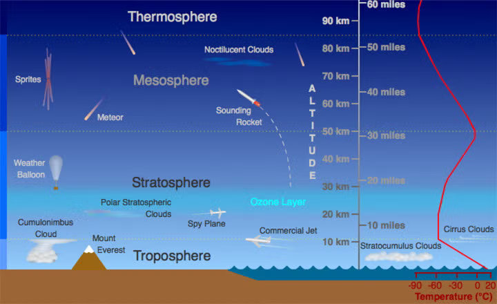

4. Agua en la atmósfera
«All the water that will ever be is, right now»
(National Geographic)
4.1. Introducción
El clima ejerce una profunda influencia tanto en los sistemas naturales como en la sociedad humana. En la ingeniería civil, las condiciones climáticas determinan la durabilidad y la funcionalidad de la infraestructura. La intensidad y frecuencia de las precipitaciones afectan el diseño de las redes de drenaje, los sistemas de gestión de aguas pluviales y las defensas contra inundaciones. Los ingenieros deben anticipar las precipitaciones extremas al diseñar puentes, alcantarillas y presas para garantizar la resiliencia estructural y la seguridad pública. De igual manera, las cargas de viento influyen en el diseño de edificios altos y torres de transmisión, mientras que los ciclos de congelación y descongelación afectan la integridad de carreteras, pavimentos y tuberías.
En la vida diaria, el clima determina la productividad agrícola, la disponibilidad de agua, la seguridad del transporte y el consumo de energía. Una lluvia intensa puede interrumpir el tráfico y causar inundaciones repentinas en zonas urbanas, mientras que una ola de calor prolongada puede aumentar la demanda de electricidad debido al aire acondicionado y, simultáneamente, reducir la disponibilidad de energía hidroeléctrica. Las nevadas y las tormentas de hielo pueden paralizar los sistemas de transporte, mientras que las sequías pueden restringir el suministro de agua. Por lo tanto, comprender el clima no es solo de interés académico, sino una necesidad para la planificación, el diseño y la gestión de riesgos, tanto en la ingeniería civil como en la vida cotidiana [Ahr21, WH06].
4.2. Tiempo atmosférico y clima
Aunque a menudo se usan indistintamente en conversaciones informales, tiempo y clima son distintos.
El tiempo atmosférico se refiere al estado de la atmósfera en un momento y lugar determinados, generalmente descrito por variables como la temperatura, la presión, la humedad, el viento y las precipitaciones. Es inherentemente dinámico y cambia en escalas de tiempo que van desde horas hasta días. En cambio, el clima, es la caracterización estadística de las condiciones meteorológicas durante períodos más largos de tiempo, típicamente de 30 años o más. Abarca promedios, variabilidad y la probabilidad de eventos extremos.
Para aplicaciones hidrológicas, esta distinción es crucial. Los pronósticos meteorológicos informan las alertas de inundaciones a corto plazo, la programación del riego y la operación de presas. Sin embargo, los análisis climáticos guían el diseño de infraestructura hídrica a largo plazo, los requisitos de almacenamiento de los embalses y las estrategias de gestión de sequías. Por lo tanto, los ingenieros civiles deben considerar tanto los impactos transitorios del clima como los patrones climáticos persistentes al abordar los desafíos relacionados con el agua [MDZP+21].
4.3. Variables utilizadas para caracterizar el tiempo y el clima
Para poder comprender y cuantificar el tiempo y el clima, tanto los meteorólogos como los hidrólogos recurren a la observación sistemática de un conjunto de variables atmosféricas fundamentales. Estas mediciones constituyen la base de la ciencia meteorológica y permiten traducir fenómenos complejos en datos objetivos que pueden ser analizados, modelados y utilizados en la toma de decisiones.
Una de las variables más importantes es la temperatura del aire, una manifestación macroscópica del calor (energía asociada al movimiento de las moléculas que conforman los gases de la atmósfera). En otras palabras, la temperatura del aire es una medida indirecta de la energía cinética de las moléculas que conforman los gases de la atmósfera. En este sentido, la velocidad promedio de las partículas de aire es un buen indicador del nivel de energía que poseen: a mayor temperatura, mayor es la energía contenida en el aire. Cuando moléculas de aire con alta velocidad, es decir, con mayor temperatura, colisionan con moléculas más lentas, que corresponden a temperaturas más bajas, transfieren parte de su energía cinética, ocasionando que las moléculas rápidas se enfríen mientras que las más lentas se calientan, equilibrando así el intercambio energético. La temperatura influye directamente en la capacidad del aire para retener vapor de agua y, en consecuencia, en los procesos de evaporación y condensación. Además, condiciona la velocidad de numerosas reacciones químicas y biológicas en los sistemas hídricos, afectando, por ejemplo, el metabolismo de los organismos acuáticos o la descomposición de la materia orgánica en ríos y embalses. Su papel en la dinámica climática es tan central que pequeños cambios de temperatura pueden modificar patrones de precipitación o la ocurrencia de fenómenos extremos. La temperatura del aire se mide con termómetros, instrumentos que reaccionan a la energía térmica del aire. Los termómetros tradicionales de líquido en vidrio utilizan mercurio o alcohol que se expande o contrae con los cambios de temperatura, mientras que los dispositivos modernos suelen emplear sensores electrónicos como termistores, termopares o termómetros de resistencia de platino, que proporcionan mayor precisión y lecturas digitales. El grado Celsius (°C) es la unidad más utilizada en meteorología y ciencias naturales, y se define en relación con los puntos de congelación (0 °C) y ebullición (100 °C) del agua a presión estándar. El kelvin (K) es la unidad del Sistema Internacional (SI), que comienza en el cero absoluto, y se utiliza comúnmente en ciencias físicas. En algunas regiones, especialmente en Estados Unidos, la escala Fahrenheit (°F) todavía se utiliza para la meteorología y aplicaciones cotidianas.
La presión atmosférica es otra variable esencial. Representa el peso de la columna de aire que se encuentra por encima de un punto de la superficie terrestre. Las diferencias de presión entre regiones generan gradientes que impulsan los movimientos horizontales del aire, es decir, los vientos. Estos contrastes de presión son responsables del desarrollo de sistemas de alta y baja presión, ciclones y anticiclones, que determinan en gran medida el estado del tiempo en distintas regiones. Desde un punto de vista muy grueso, la presión atmosférica representa la cantidad de golpes entre las moléculas que componen el aire. La presión atmosférica se mide tradicionalmente con un barómetro, un instrumento ideado por primera vez por Evangelista Torricelli en el siglo XVII. En un barómetro de mercurio, la altura de una columna de mercurio en un tubo de vidrio refleja la presión ejercida por el peso del aire suprayacente. Posteriormente, el barómetro aneroide, que utiliza una cámara metálica sellada y flexible que se expande o contrae con los cambios de presión, proporcionó una alternativa más portátil y práctica. Hoy en día, la presión se mide en varias unidades: el pascal (Pa), la unidad del SI, definida como un Newton por metro cuadrado; el hectopascal (hPa), de uso común en meteorología (1 hPa = 100 Pa); y el milibar (mb), históricamente extendido y numéricamente equivalente al hectopascal. A nivel del mar, la presión atmosférica estándar es de aproximadamente 1013 hPa (o 1013 mb). Otras unidades incluyen milímetros de mercurio (mmHg) y pulgadas de mercurio (inHg), aún en uso en algunas regiones y aplicaciones. La evolución de los instrumentos barométricos y la estandarización de las unidades han hecho de la presión atmosférica una medida fundamental y universalmente comparable en la meteorología, la aviación y la ciencia del clima.
Los vientos, a su vez, cumplen una función clave en la redistribución de energía y materia dentro de la atmósfera. A través de ellos, el calor, la humedad y también contaminantes o partículas en suspensión son transportados a grandes distancias. Los vientos contribuyen a la formación y evolución de sistemas de tormenta, modifican los patrones de precipitación y afectan la tasa de evapotranspiración, proceso central en el ciclo hidrológico que combina la evaporación del agua desde superficies y la transpiración de las plantas. En este sentido, el estudio de los vientos no solo es importante para la meteorología, sino también para la agricultura, la gestión de recursos hídricos y la planificación de infraestructuras. La velocidad del viento se mide comúnmente con un anemómetro, tradicionalmente un dispositivo de copa o hélice que gira proporcionalmente a la velocidad del viento, o con sensores ultrasónicos modernos que detectan cambios en la propagación de las ondas sonoras. La dirección del viento se mide con una veleta o se obtiene directamente de anemómetros ultrasónicos, y se expresa como la dirección desde la que sopla el viento (por ejemplo, un viento del oeste viene del oeste). La velocidad del viento se expresa típicamente en metros por segundo (m/s) en contextos científicos y meteorológicos, mientras que los kilómetros por hora (km/h), las millas por hora (mph) y los nudos (millas náuticas por hora) también se utilizan ampliamente según la aplicación.
La humedad atmosférica es igualmente decisiva, pues expresa la cantidad de vapor de agua presente en el aire. Su importancia radica en que el vapor de agua es el combustible de la mayoría de los fenómenos meteorológicos. La humedad condiciona la formación de nubes, las precipitaciones y la aparición de fenómenos como la niebla o las tormentas convectivas. Además, influye directamente en el confort humano y en la percepción térmica, ya que el nivel de humedad regula la capacidad del cuerpo para liberar calor a través de la transpiración. La humedad se puede expresar de varias maneras: humedad absoluta (gramos de vapor de agua por metro cúbico de aire), humedad específica (gramos de vapor de agua por kilogramo de aire) y, con mayor frecuencia, humedad relativa (HR), expresada como porcentaje del vapor de agua máximo que el aire puede contener a una temperatura dada. La humedad atmosférica se mide habitualmente con un higrómetro, que puede basarse en diferentes principios: los higrómetros mecánicos utilizan materiales orgánicos (como el cabello humano) que se expanden con la humedad, mientras que los sensores electrónicos modernos (capacitivos o resistivos) detectan cambios en las propiedades eléctricas con la humedad. Un método tradicional es el psicrómetro, que compara las lecturas de un termómetro de bulbo seco y uno de bulbo húmedo para estimar la humedad relativa.
Consideradas en conjunto, estas variables permiten a los científicos describir el estado actual de la atmósfera con precisión, anticipar su evolución futura mediante pronósticos y analizar las tendencias climáticas a largo plazo. En el ámbito de la hidrología, representan la base de estudios esenciales como las evaluaciones del balance hídrico, los cálculos de evapotranspiración y la predicción de fenómenos extremos tales como sequías e inundaciones. Su monitoreo constante y detallado es, por tanto, un requisito indispensable para la gestión sostenible de los recursos hídricos y la protección de la sociedad frente a riesgos naturales [Ahr21].
Ley de los gases ideales
En ciencias atmosféricas, la ley de los gases ideales establece la relación fundamental entre la presión atmosférica y la densidad y temperatura del aire. La ley de los gases ideales sirve como ecuación de estado para la atmósfera y se escribe como:
En esta expresión, p es la presión del aire medida en pascales, \(\rho\) es la densidad del aire en kilogramos por metro cúbico y \(T\) es la temperatura absoluta en kelvin. La constante \(R_d\) representa la constante específica del gas para el aire seco, con un valor aproximado de 287 J kg-1 K.
Dado que la atmósfera contiene vapor de agua, a menudo se emplea una formulación más general. En este caso, la ecuación de estado se expresa como:
Aquí, \(T_v\) es la temperatura virtual, que corrige la presencia de vapor de agua debido a su menor peso molecular en comparación con el aire seco. La temperatura virtual se define como:
donde \(q_v\) es la humedad específica, que representa la masa de vapor de agua por unidad de masa de aire húmedo.
La ley de los gases ideales es fundamental para la circulación atmosférica porque vincula la termodinámica con la dinámica. Al relacionar la presión (\(p\)) con la densidad (\(\rho\)) y la temperatura (\(T\)), proporciona la base para derivar el balance hidrostático y la relación temperatura-viento. Estos conceptos son esenciales para comprender cómo los gradientes horizontales de temperatura determinan los patrones de circulación a gran escala en la atmósfera.
4.4. Humedad atmosférica y ley de Clausius-Clapeyron
La capacidad de la atmósfera para retener vapor de agua no es constante, sino que depende de la temperatura del aire. Este principio fundamental se describe mediante la ley de Clausius–Clapeyron, una relación termodinámica que establece cómo varía la presión de vapor saturado con la temperatura del aire.
La presión de vapor saturado, \(e_s\), corresponde al máximo contenido de vapor de agua que el aire puede mantener en equilibrio con una superficie de agua líquida (o de hielo) a una temperatura determinada del aire. Si la cantidad de vapor excede ese límite, el exceso se condensa, dando lugar a la formación de gotas de agua o cristales de hielo. Por esta razón, el concepto de presión de vapor saturado es esencial para comprender el inicio de la nubosidad y de la precipitación. En particular, ley de Clausius–Clapeyron describe la máxima cantidad de agua que puede existir en estado gaseoso en un volumen dado.
La ley de Clausius–Clapeyron se expresa de manera simplificada como:
donde \(e_s\) es la presión de vapor de saturación, \(L\) el calor latente de vaporización o sublimación, \(R^*\) la constante de los gases ideales y \(T\) la temperatura absoluta. Esta ecuación indica que la variación de la presión de saturación con la temperatura es proporcional a la propia presión de saturación y al calor latente, e inversamente proporcional al cuadrado de la temperatura.
De manera extendida, esta ley puede escribirse como:
donde:
\(e_s\): presión de vapor del gas saturado, [hPa].
\(e_s0\): presión de vapor del gas a la temperatura \(T_0\), [hPa].
\(m_v\): peso molecular del vapor de agua, \(m_v = 18\) [g/mol].
\(R^*\): constante universal de los gases. \(R^* = 8.31447\) [J/mol K].
\(L\): calor latente de vaporización o sublimación, [cal/g]:
calor latente de vaporización: \(L_v = 597.25-0.566 \cdot T\).
calor latente de sublimación: \(L_s = 677.04-0.062 \cdot T\).
\(T\): Temperatura absoluta, [K].
Para \(T_0 = 273\) [K] (punto triple del agua) se ha determinado experimentalmente que \(e_{s0}(T_0)=6.11\) [hPa], y por lo tanto, podemos escribir la ley de Clausius–Clapeyron de la siguiente forma reducida:
Analizando la expresión anterior es posible observar que a medida que la atmósfera se calienta, se incrementa exponencialmente la cantidad de vapor de agua que puede retener antes de alcanzar la saturación. Una regla empírica ampliamente utilizada es que, por cada aumento de 1°C en la temperatura del aire, la atmósfera es capaz de contener aproximadamente un 7% más de vapor de agua. Esta sensibilidad relativamente alta tiene implicaciones directas en el ciclo hidrológico y en la dinámica de eventos extremos.
Desde el punto de vista hidrológico, la ley de Clausius–Clapeyron explica por qué en las regiones tropicales, donde las temperaturas son más elevadas, las precipitaciones suelen ser más intensas y frecuentes. También ayuda a comprender la relación entre el calentamiento global y el incremento en la severidad de las lluvias torrenciales. A medida que la temperatura media global aumenta, la atmósfera puede almacenar más vapor, lo cual, cuando se dan las condiciones adecuadas para la convección y la condensación, se traduce en precipitaciones más intensas.
Este fenómeno tiene repercusiones directas en la ingeniería civil y la gestión de recursos hídricos. La mayor disponibilidad de vapor de agua en un clima más cálido aumenta la probabilidad de tormentas severas y de precipitaciones extremas, lo que incrementa los riesgos de inundaciones urbanas y fluviales. Para los ingenieros, esto implica que las infraestructuras diseñadas bajo condiciones climáticas históricas podrían no ser insuficientes frente a escenarios futuros. Sistemas de drenaje urbano y vial, presas, canales y defensas contra inundaciones deben dimensionarse considerando la intensificación proyectada de los eventos extremos. Por tanto, la ley de Clausius–Clapeyron, aunque es una formulación termodinámica simple, constituye un puente esencial entre la física básica de la atmósfera y los desafíos prácticos de la hidrología y la planificación de infraestructuras en un contexto de cambio climático [MDZP+21].
4.5. Composición y capas de la atmosférica
4.5.1. Composición atmosférica
La atmósfera terrestre es una envoltura gaseosa compleja que rodea nuestro planeta y desempeña un papel esencial en el mantenimiento de la vida y en la regulación del clima. Su composición no es homogénea ni estática, pero sí podemos identificar los componentes mayoritarios que la conforman. El nitrógeno (N₂) constituye aproximadamente el 78% del volumen del aire y actúa como un gas inerte que proporciona estabilidad a la mezcla atmosférica. El oxígeno (O₂), con una proporción cercana al 21%, es indispensable para la respiración de los seres vivos y para los procesos de combustión. En menor medida, encontramos el argón (Ar), que representa alrededor del 0,93% y, aunque químicamente poco activo, contribuye a la densidad del aire.
Un componente que merece especial atención es el dióxido de carbono (CO₂), cuya concentración ronda el 0,04%. Si bien puede parecer un valor pequeño, su importancia es enorme debido a su capacidad para absorber y emitir radiación infrarroja, lo que lo convierte en un gas de efecto invernadero clave. Además, su concentración se ha incrementado de manera significativa en las últimas décadas a causa de las actividades humanas, principalmente por la quema de combustibles fósiles y los cambios en el uso del suelo.
A diferencia de los gases mencionados, el vapor de agua tiene una distribución mucho más variable en el espacio y el tiempo. En zonas desérticas puede encontrarse en cantidades casi nulas, mientras que en regiones tropicales húmedas puede alcanzar valores superiores al 4%. Esta variabilidad convierte al vapor de agua en un elemento central de la dinámica atmosférica, ya que interviene directamente en la formación de nubes, precipitaciones y en el transporte de energía mediante la liberación de calor latente.
Existen también gases presentes en proporciones mucho menores, conocidos como gases traza. Entre ellos destacan el metano (CH₄), el ozono (O₃) y el óxido nitroso (N₂O). A pesar de sus concentraciones reducidas, estos compuestos desempeñan un papel desproporcionado en el equilibrio radiativo y en la química de la atmósfera. Por ejemplo, el ozono es fundamental en la estratosfera porque absorbe la radiación ultravioleta nociva, mientras que en la troposfera puede actuar como contaminante y contribuir al efecto invernadero.
¿Por qué el aire húmedo pesa menos que el aire seco en una parcela de aire de volumen fijo?
El aire seco está compuesto principalmente por nitrógeno (N₂) y oxígeno (O₂), mientras que el aire húmedo es una mezcla de aire seco y vapor de agua (H₂O). La masa molecular del nitrógeno es aproximadamente 28 unidades, la del oxígeno es aproximadamente 32 unidades y la del vapor de agua es aproximadamente 18 unidades. Cuando en un volumen fijo parte del aire seco se reemplaza por vapor de agua (es decir, aumenta la humedad específica), los gases más pesados del aire seco son sustituidos por moléculas más ligeras provenientes del aire húmedo.
Según la ley de Avogadro, a la misma temperatura y presión, un volumen dado de cualquier gas contiene el mismo número de moléculas. Esto significa que cada molécula de vapor de agua que se incorpora al aire desplaza a una molécula de nitrógeno o de oxígeno, que son más pesadas. Como resultado, la masa total del aire en ese volumen disminuye, lo que reduce su densidad. En otras palabras, el aire húmedo es más liviano que el aire seco a la misma temperatura y presión, porque contiene una mayor proporción de moléculas de vapor de agua más ligeras en lugar de las moléculas más pesadas de nitrógeno y oxígeno. Esta diferencia de densidad explica, por ejemplo, por qué el aire húmedo tiende a ascender en la atmósfera y juega un papel fundamental en la formación de convección y nubes.
Supongamos 1 m³ de aire seco a temperatura y presión estándar. Su densidad promedio es aproximadamente 1,225 kg/m³. Si este aire contiene un 10% de vapor de agua en volumen, parte del nitrógeno y oxígeno (más pesados) se sustituye por vapor de agua (más ligero). La densidad resultante disminuye a aproximadamente 1,217 kg/m³. Este simple cálculo muestra que incluso un pequeño aumento de humedad reduce la densidad del aire, favoreciendo su ascenso. Este principio explica fenómenos como la convección en la atmósfera, la formación de nubes y la dinámica de las corrientes de aire húmedo.
4.5.2. Capas de la atmósfera
Además de su composición, la atmósfera presenta una organización vertical en capas, definida principalmente por los gradientes de temperatura con la altitud.
{kind=link}

Estructura vertical de la atmósfera. Fuente: https://scied.ucar.edu/image/atmosphere-layers-diagram.
La capa más baja de la atmósfera es la troposfera, la cual se extiende desde la superficie terrestre hasta unos 12 km de altura, aunque su espesor varía desde aproximadamente 8 km en los polos hasta 16–18 km en los trópicos. En esta capa se concentran casi todos los fenómenos meteorológicos, debido a la abundancia de vapor de agua y a los procesos de mezcla turbulenta. La temperatura en la troposfera disminuye con la altura a un ritmo promedio de 6.5°C/km. Este gradiente térmico ambiental controla la estabilidad atmosférica, determinando si el aire asciende, favoreciendo la formación de nubes y precipitaciones, o desciende, lo que produce cielos despejados. Por su papel en la condensación del vapor de agua, la formación de nubes y la generación de lluvias, la troposfera es fundamental tanto para la meteorología como para la hidrología. Comprender su dinámica resulta esencial en el diseño de infraestructuras hidráulicas y en la gestión del riesgo asociado a tormentas, precipitaciones intensas y sequías.
Por encima de la troposfera se encuentra la estratosfera, que se extiende entre los 12 y los 50 km de altitud. Esta capa se distingue por una inversión térmica, es decir, un aumento de la temperatura con la altura, fenómeno que se debe a la absorción de radiación ultravioleta por parte del ozono estratosférico. Gracias a esta función, la estratosfera actúa como un escudo protector frente a la radiación solar más dañina.
Más arriba se localiza la mesosfera, entre los 50 y 85 km, caracterizada por ser la capa más fría de la atmósfera. En ella se observan espectáculos naturales como la desintegración de meteoros, visibles desde la superficie como «estrellas fugaces».
Finalmente, se encuentra la termosfera, que se extiende por encima de los 85 km. Aquí, las temperaturas aumentan nuevamente debido a la absorción de energía solar de alta frecuencia. Es en esta capa donde se producen fenómenos luminosos impresionantes, como las auroras boreales y australes, originadas por la interacción entre el viento solar y el campo magnético terrestre.
En síntesis, aunque la atmósfera es una entidad continua, su estructura vertical permite entender mejor los procesos que ocurren en su interior. Para la meteorología aplicada y la hidrología, la troposfera es sin duda la región más relevante, ya que concentra casi todo el vapor de agua de la atmósfera e impulsa los procesos fundamentales del ciclo hidrológico [LT18].
4.6. Altitud, temperatura del aire y presión atmosférica
La comprensión de la variación de la presión con la altitud surgió gradualmente gracias al trabajo de varios científicos pioneros en el siglo XVII. Evangelista Torricelli (1608-1647), discípulo de Galileo, fue el primero en demostrar que el aire tiene peso al inventar el barómetro de mercurio en 1643. Al invertir un tubo lleno de mercurio en un recipiente, demostró que la altura de la columna se estabilizaba en unos 76 cm, equilibrando el peso de la atmósfera. Esta fue una idea revolucionaria, ya que hasta entonces muchos creían que «la naturaleza aborrece el vacío».
Galileo Galilei (1564-1642), aunque falleció poco antes del descubrimiento de Torricelli, ya había explorado los límites de las bombas de succión y sospechaba que la presión del aire, y no un «horror vacui», explicaba por qué las bombas no podían elevar el agua por encima de cierta altura. El trabajo de Torricelli confirmó la intuición de Galileo y sentó las bases de la física atmosférica.
Basándose en Torricelli, Blaise Pascal (1623-1662) planteó la hipótesis de que si la presión del aire se debe al peso de la atmósfera, entonces la presión debería disminuir con la altitud. Para comprobarlo, el cuñado de Pascal, Florin Périer (1605-1672), realizó el famoso experimento de Puy de Dôme en 1648. Llevó un barómetro de mercurio desde la base hasta la cima del Puy de Dôme, una montaña volcánica en el centro de Francia. Como predijo Pascal, la columna de mercurio descendió con el aumento de la altitud, lo que proporcionó una prueba empírica directa de que la presión atmosférica disminuye con la altura. Este fue un momento histórico en la historia de la ciencia, estableciendo la atmósfera como una entidad física medible.
El vínculo entre la presión atmosférica y la temperatura del aire se aclaró aún más en los siglos siguientes, cuando los científicos reconocieron que el aire en expansión se enfría al ser elevado a entornos de menor presión. Este principio, fundamental para el proceso adiabático, es esencial para comprender la formación de nubes, la precipitación y la estabilidad atmosférica. Los experimentos históricos de Torricelli, Galileo, Pascal y Périer no solo revelaron el peso de la atmósfera, sino que también sentaron las bases para el desarrollo de la termodinámica y la meteorología moderna.
La variación de la presión atmosférica con la altura se puede comprender mediante la ecuación hidrostática y la ley de los gases ideales. La ecuación hidrostática expresa que el cambio de presión con la altura es proporcional al peso de la columna de aire suprayacente:
donde \(P\) es la presión atmosférica en pascales, \(z\) es la altura sobre la superficie en metros, \(\rho\) es la densidad del aire en kg/m³ y \(g\) es la aceleración de la gravedad, aproximadamente 9,81 m/s².
La densidad del aire se relaciona con la presión y la temperatura mediante la ley de los gases ideales:
donde \(T\) es la temperatura absoluta del aire en kelvins y \(R\) es la constante específica de los gases para el aire seco, aproximadamente 287 J/(kg·K).
Al combinar la ecuación hidrostática con la ley de los gases ideales, obtenemos:
o equivalentemente:
La ecuación diferencial anterior se puede integrar para obtener la fórmula barométrica, la cual describe cómo la presión atmosférica disminuye con la altura en función de la temperatura. Para una atmósfera isotérmica, donde la temperatura se asume constante:
donde \(P_0\) es la presión a una altura de referencia, generalmente el nivel del mar.
Para una atmósfera no isotérmica, donde la temperatura disminuye linealmente con la altura (e.g., tropósfera),
donde \(L\) representa el gradiente térmico en K/m, la variación de la presión con la altura está dada por la siguinte expresión:
Estas ecuaciones muestran que la presión disminuye con la altura y que la tasa de disminución depende de la temperatura.
El aire cálido provoca una disminución más lenta de la presión con la altura, mientras que el aire más frío produce una disminución más rápida de la presión. Esta relación es fundamental para comprender la estructura atmosférica, los patrones climáticos y los perfiles verticales de presión y temperatura.
4.7. Leyes de conservación que rigen el movimiento atmosférico
El comportamiento de la atmósfera y, en particular, el movimiento de las masas de aire, está gobernado por tres principios fundamentales de la física: la conservación de la masa, la conservación de la energía y la conservación del momento (momentum). Estas leyes no actúan de manera aislada, sino que se encuentran fuertemente interconectadas, determinando en conjunto la dinámica atmosférica y los procesos que originan el tiempo y el clima.
Conservación de la masa: La conservación de la masa asegura que el aire no puede crearse ni destruirse dentro de un volumen de la atmósfera, salvo por procesos de intercambio como la evaporación, la condensación o la precipitación. Matemáticamente, este principio se expresa a través de la ecuación de continuidad, que describe cómo la densidad del aire cambia en el tiempo en función de los flujos que entran o salen de un volumen. En términos prácticos, la ecuación de continuidad explica, por ejemplo, la convergencia y divergencia de las corrientes de aire, fenómenos que son esenciales para el desarrollo de nubes y tormentas.
Ecuación de continuidad
En el contexto de la circulación atmosférica, la ecuación de continuidad expresa la conservación de la masa de una parcela de aire. Su forma completa, antes de cualquier aproximación como las formas anelásticas o de Boussinesq, es:
donde \(\rho(x,y,z,t)\) representa la densidad del aire en kilogramos por metro cúbico, y \(\mathbf{v} = (u, v, w)\) es el vector tridimensional del viento con componentes zonales (\(u\)), meridionales (\(v\)) y verticales (\(w\)). El operador \(\nabla \cdot\) denota la divergencia.
El primer término, \(\frac{\partial \rho}{\partial t}\), representa la tasa local de cambio de la densidad. El término de divergencia, \(\nabla \cdot (\rho \mathbf{v})\), representa la divergencia del flujo neto de masa respecto a un volumen de control.
En conjunto, la ecuación de continuidad establece que cualquier aumento o disminución de la densidad del aire dentro de un volumen dado debe compensarse con una entrada o salida neta de masa correspondiente.
Un caso especial útil surge cuando se supone que la densidad es constante. En este límite incompresible, la ecuación de continuidad se simplifica a:
Esta aproximación se aplica a veces en dinámicas atmosféricas a gran escala según el modelo de Boussinesq, aunque no es válida para la atmósfera totalmente compresible.
Conservación de la energía: La energía en la atmósfera se manifiesta en distintas formas: energía interna (temperatura), energía potencial (altura), y energía cinética (movimiento del aire). El principio de conservación de la energía establece que la variación en la energía total de un volumen de aire depende de los flujos de energía que atraviesan sus límites y de los procesos de intercambio, como la radiación solar, la liberación de calor latente durante la condensación o la conducción térmica. En la atmósfera, este balance energético se refleja directamente en los gradientes de temperatura, que a su vez afectan la densidad del aire (a mayor temperatura, menor densidad del aire). De esta manera, la conservación de la energía se vincula con la de la masa a través de la flotabilidad: el aire caliente y menos denso tiende a ascender, mientras que el aire frío y más denso desciende, generando movimientos verticales que son la base de la convección.
Ecuación de conservación de la energía
En ciencias atmosféricas, la ecuación de conservación de la energía representa la primera ley de la termodinámica aplicada a una partícula de aire, que representa su energía interna, cinética y potencial. La forma compresible completa de la ecuación es:
En esta formulación, rho representa la densidad del aire en kilogramos por metro cúbico y mathbf{v} = (u, v, w) es el vector de velocidad del viento. La energía específica total \(e\) se compone de la energía interna \(c_v T\), la energía cinética \(\frac{1}{2} |\mathbf{v}|^2\) y la energía potencial gravitacional \(\Phi = gz\). El término \(p\) denota la presión atmosférica, \(\mathbf{g}\) el vector de aceleración gravitacional, \(\mathbf{K}\) el tensor de conductividad térmica, \(T\) la temperatura y \(Q\) representa cualquier tasa de calentamiento diabático por unidad de volumen, como la causada por radiación o la liberación de calor latente.
Esta ecuación indica que la tasa de cambio de la energía total de una parcela de aire es igual a la suma del trabajo realizado por las fuerzas de presión, la conversión entre energía potencial y cinética, conducción de calor y cualquier calentamiento diabático externo. Sirve como enunciado termodinámico fundamental para los movimientos atmosféricos y es esencial para comprender procesos como la convección, la radiación y los cambios de fase del agua en la atmósfera.
Para los movimientos atmosféricos a gran escala, suele ser conveniente expresar la conservación de la energía en términos de entalpía o temperatura potencial, en lugar de la energía interna, cinética y potencial completa. Utilizando la entalpía específica \(h = c_p T\) y la temperatura potencial \(\theta\), la ecuación de energía para una atmósfera compresible y estratificada se puede escribir como:
donde \(\frac{d}{dt} = \frac{\partial}{\partial t} + \mathbf{v} \cdot \nabla\) es la derivada material (o lagrangiana), \(c_p\) es el calor específico a presión constante, \(Q\) es el calentamiento diabático por unidad de masa y \(\theta = T \left(\frac{p_0}{p}\right)^{R/c_p}\) es la temperatura potencial relativa a una presión de referencia \(p_0\).
Esta formulación enfatiza que, en ausencia de calentamiento diabático (Q = 0), la temperatura potencial de una parcela de aire se conserva a medida que se desplaza por la atmósfera. Esta propiedad es fundamental para comprender los movimientos adiabáticos, como los de la circulación a gran escala, la convección y los sistemas meteorológicos a escala sinóptica.
Para aplicaciones prácticas en meteorología, la ecuación de energía total suele descomponerse en balances de energía cinética, potencial e interna, pero el uso de la temperatura potencial o la entalpía simplifica el análisis de los procesos termodinámicos a gran escala, especialmente cuando el movimiento vertical y la estratificación son importantes.
Conservación del momentum La conservación del momentum describe cómo las masas de aire responden a las fuerzas que actúan sobre ellas. Estas incluyen la gravedad, los gradientes de presión, la fuerza de rozamiento (fricción) y, de manera particular en un planeta en rotación, la fuerza de Coriolis. La interacción entre estas fuerzas explica tanto los movimientos horizontales (vientos) como los verticales (corrientes ascendentes y descendentes). Por ejemplo, el equilibrio entre la fuerza de presión y la fuerza de Coriolis genera el llamado viento geostrófico, característico de la circulación atmosférica a gran escala.
Ecuación de conservación del momentum
En el contexto de la circulación atmosférica, la ley de conservación del momentum se describe mediante las ecuaciones de Navier-Stokes para un fluido compresible. Estas ecuaciones determinan cómo cambia la velocidad de una parcela de aire bajo la acción de las fuerzas que actúan sobre ella. En notación vectorial, la forma completa es:
En esta formulación, \(\rho\) representa la densidad del aire en kilogramos por metro cúbico, y \(\mathbf{v} = (u, v, w)\) es el vector tridimensional de la velocidad del viento. El término \(p\) denota la presión, \(\mathbf{g}\) el vector de aceleración gravitacional, y \(\mathbf{\tau}\) es el tensor de tensión viscosa que representa las fuerzas de fricción. La fuerza de Coriolis por unidad de volumen, \(\mathbf{F}_c\), suele expresarse como \(2 \rho \mathbf{\Omega} \times \mathbf{v}\), donde \(\mathbf{\Omega}\) es el vector de rotación de la Tierra.
Estas ecuaciones indican que la tasa de cambio del momentum de una parcela de aire está determinada por la suma de las fuerzas que actúan sobre ella. La fuerza del gradiente de presión impulsa el movimiento desde regiones de alta presión a regiones de baja presión. La gravedad actúa verticalmente, mientras que las fuerzas de fricción están representadas por el tensor de tensión viscosa. La rotación de la Tierra introduce la fuerza de Coriolis, que desvía el movimiento hacia la derecha en el hemisferio norte y hacia la izquierda en el hemisferio sur. Juntas, estas ecuaciones forman la base de la dinámica atmosférica, que rige la circulación a gran escala, el equilibrio geostrófico y la evolución de los sistemas meteorológicos.
Estas tres leyes de conservación están estrechamente acopladas. Los gradientes de temperatura (energía) inducen diferencias de densidad y presión (masa), que a su vez generan movimientos de las masas de aire impulsados por gradientes de presión atmosférica y modificados por la rotación terrestre (momentum). A medida que el aire se desplaza, transporta consigo masa (humedad, aerosoles), energía (calor sensible y latente) y momentum, retroalimentando el sistema.
Un ejemplo claro de esta interacción se encuentra en la formación de una tormenta convectiva. La energía solar calienta la superficie terrestre, transfiriendo calor al aire cercano al suelo (conservación de la energía). El aire caliente, al ser menos denso, asciende, modificando la distribución de masa (conservación de la masa). Durante el ascenso, el vapor de agua se condensa, liberando calor latente que intensifica la convección, mientras que los movimientos resultantes del aire están regidos por el balance de fuerzas (conservación del momentum).
En conjunto, estas leyes proporcionan el marco físico que gobierna toda la circulación atmosférica, desde los fenómenos locales como brisas y tormentas hasta la organización global de los vientos alisios, los ciclones y las corrientes en chorro [HW80].
4.8. Perspectiva integradora
El estudio del agua en la atmósfera para aplicaciones hidrológicas requiere un enfoque integrado. Los fenómenos meteorológicos son la expresión visible de las leyes fundamentales de conservación que operan en la atmósfera, limitadas por su composición y estructura vertical. La troposfera desempeña un papel central como motor de los procesos hidrológicos, donde la humedad, el calor y el momento interactúan para producir lluvia, tormentas y patrones de viento. La ley de Clausius-Clapeyron vincula la temperatura del aire con la cantidad máxima de vapor de agua que puede contener la atmósfera, lo que establece una conexión directa entre el calentamiento global y la intensificación de eventos hidrológicos extremos.
Para ingenieros civiles e hidrólogos, comprender estos principios atmosféricos no es una teoría abstracta, sino una base esencial para el diseño de infraestructura, la gestión de los recursos hídricos y la planificación y diseño de obras resilientes a los efectos negativos del cambio climático. Las variables de temperatura del aire, presión atmosfética, viento y humedad del aire constituyen el lenguaje del tiempo atmosférico y el clima, conectando las disciplinas de la ciencia atmosférica con la hidrología para el servicio de nuestra sociedad.
4.9. References
V. Masson-Delmotte, P. Zhai, A. Pirani, S.L. Connors, C. Péan, S. Berger, N. Caud, Y. Chen, L. Goldfarb, M.I. Gomis, M. Huang, K. Leitzell, E. Lonnoy, J.B.R. Matthews, T.K. Maycock, T. Waterfield, O. Yelekçi, R. Yu, and B. Zhou, editors. Climate Change 2021: The Physical Science Basis. Contribution of Working Group I to the Sixth Assessment Report of the Intergovernmental Panel on Climate Change. Cambridge University Press, Cambridge, United Kingdom and New York, NY, USA, 2021. doi:10.1017/9781009157896.
C. Donald Ahrens. Meteorology today: An Introduction to Weather, Climate and the Environment. Cengage Learning, 13th edition, 2021.
John M. Wallace and Peter V. Hobbs. Atmospheric Science: An Introductory Survey. Elsevier, 2nd edition, 2006.
Frederick K. Lutgens and Edward J. Tarbuck. The Atmosphere: An Introduction to Meteorology. Pearson, 14th edition, 2018.
George J. Haltiner and Roger T. Williams. Numerical Prediction and Dynamic Meteorology. John Wiley & Sons, 2nd edition, 1980.